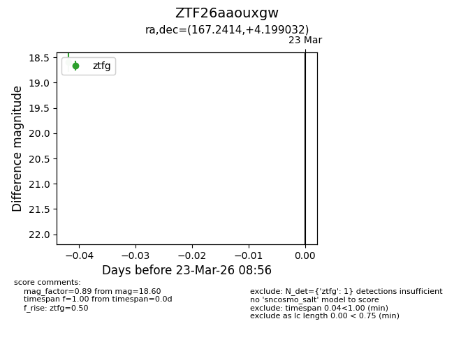
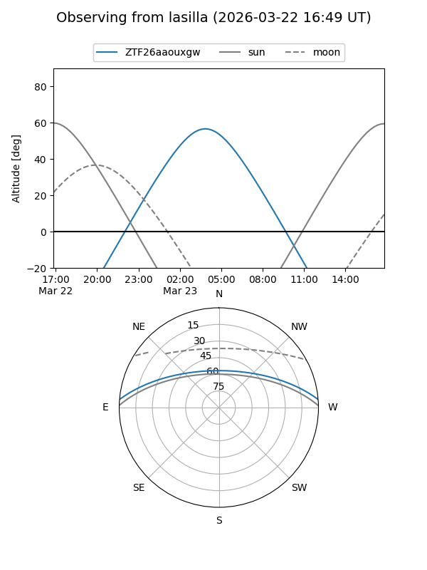
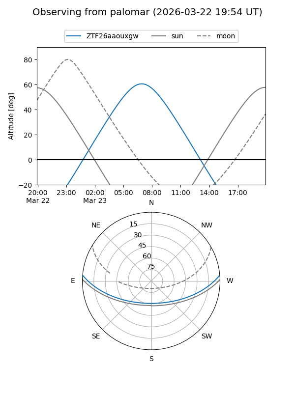

ZTF26aaouxgw
Target ZTF26aaouxgw at 2026-03-23 08:58
Aliases and brokers:
FINK: link
Lasair: link
ALeRCE: link
alt names
ZTF26aaouxgw (ztf,fink_ztf)
Coordinates:
equatorial (ra, dec) = 167.2414,+4.19903
equatorial (HMS+DMS) = 11:08:57.94,+04:11:56.52
galactic (l, b) = (251.5854,+56.48410)
Flags:
Photometry:
last ztfg=18.60
1 ztfg detections
Lightcurve

Visibility


Additional plots